2. Introducción para CESE
Introducción a inteligencia artificial para alumnos de CESE
IA, ML, redes neuronales y deep learning
IA, ML, redes neuronales y deep learning
IA: cualquier simulación o imitación de la inteligencia humana en una
máquina se considera IA. Programación de máquinas que imitan el pensamiento, el aprendizaje y la resolución de
problemas humanos.
ML: la metodología de entrenar un sistema con el fin de aprender de datos
del pasado para realizar predicciones y tomar decisiones de más precisas.
ANN: sistemas de ML inspirados por el cerebro humano. Consisten en unidades
(neuronas) conectadas en una capa para aprender relaciones entre las entradas y las salidas.
DL: grandes estructuras de redes neuronales con múltiples capas capaces de
extraer características de entrada con el fin de obtener una buena respresentación entre entradas y salidas.
Ciclo de vida de un proyecto de IA
Un recorrido por las etapas fundamentales
Ciclo de vida de un proyecto de IA
Adquisición de datos
- Materia prima: sensores, imágenes, texto, IoT.
- Calidad: "Garbage in, garbage out".
Ciclo de vida de un proyecto de IA
Preparación de datos
- Limpieza y etiquetado: ordenar la casa.
- Esfuerzo: representa el 80% del tiempo del proyecto.
Ciclo de vida de un proyecto de IA
Diseño de modelos
Búsqueda de la representación matemática ideal para aprender patrones.
Ciclo de vida de un proyecto de IA
Entrenamiento e inferencia
- Entrenamiento: proceso de aprendizaje (requiere GPU y energía).
- Inferencia: uso del modelo en producción (ejecución).
Ciclo de vida de un proyecto de IA
Evaluación: clasificación
- Precisión: ¿cuánto de lo que predigo es correcto?
- Recall / sensibilidad: ¿cuánto de la realidad detecto?
- F1-score: balance entre ambos.
Ciclo de vida de un proyecto de IA
Evaluación: regresión
- MSE (Mean Squared Error): penaliza errores grandes.
- MAE (Mean Absolute Error): más fácil de interpretar.
- R² (coeficiente de determinación): ¿qué tan bien se ajusta la curva?
Ciclo de vida de un proyecto de IA
Despliegue
- Llevar la IA al mundo real (App, Microcontrolador, Cloud).
- Desafíos: latencia, escalabilidad y mantenimiento.
Ciclo de vida de un proyecto de IA
Ideas clave
- El éxito depende más de los datos que del algoritmo.
- La evaluación debe ser rigurosa y penalizar el impacto real.
- El despliegue cierra el ciclo pero requiere monitoreo constante.
Tipos de problemas
De manera general existen dos tipos de problemas:
-
Regresión: Consiste en predecir un valor continuo a partir de un conjunto de datos.
-
Clasificación: Consiste en predecir una categoría o etiqueta a partir de un
conjunto de datos.
Los datos son la materia prima de los algoritmos de IA.
Regresión lineal
- Tipo de problema: predicción continua (regresión).
- Modela relación entre variable dependiente ($y$) e independientes ($X$).
- Busca minimizar la suma de errores cuadráticos (MSE o
Mínimos Cuadrados).
β = (XT X)-1 XT y
¡Tiene solución analítica cerrada!
Los coeficientes exactos se calculan directamente en un solo
paso (OLS).
Regresión logística
- Tipo de problema: clasificación (predice probabilidades).
- Emplea una función sigmoide para acotar las salidas entre
0
y 1.
- Busca maximizar la función de log-verosimilitud.
¡NO tiene solución analítica cerrada!
Requiere algoritmos de optimización numérica
iterativos
(ej. Descenso de Gradiente o Newton-Raphson).
Datos, cómputo y el paradigma ML/DL
- Al pasar de algoritmos clásicos a de ML/DL, es lo mismoLos modelos se definen como problemas de
optimización (regresión/clasificación).
- Se pueden resolver problemas más complejos.
- Están completamente impulsados por los datos, que son más complejos.
- Se requieren modelos con complejidad proporcional a la tarea.
- El modelo hace la parte del preprocesamiento de datos.
- Casi nunca tienen forma cerrada: dependen un 100% de la optimización numérica para
ajustar sus parámetros.
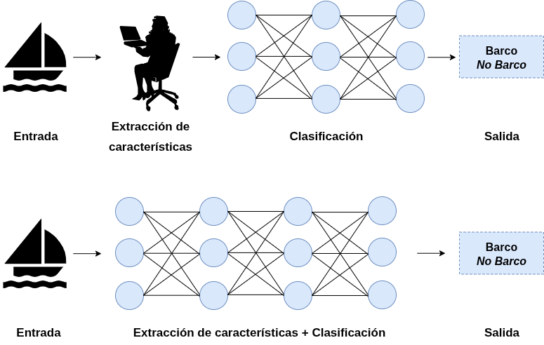
El poder de la IA está atado a poder de cómputo y la abundancia de datos, que permiten entrenar modelos más
complejos.
¿Qué es un modelo matemático?
Una función paramétrica que aproxima una relación entre datos:
y = f(x; θ)
- Entradas (x): Datos observados (features).
- Salidas (y): Predicción o decisión.
- Parámetros (θ): Valores internos ajustables de la función.
- Ejemplos:
- Regresión lineal:
y = β0 + β1x1 + ... + βnxn
- Regresión logística:
y = σ(β0 + β1x1 + ... + βnxn)
- Modelo cuadrático:
y = ax2 + bx + c
- Recta + senoide:
y = a x + b + c sin(d x + e)
- Una neurona:
y = φ(∑wixi + b)
Entrenamiento vs. inferencia
- Inferencia: ejecutar el modelo
f(x, θ) con
parámetros fijos para generar salidas ante nuevos datos.
- Entrenamiento: proceso iterativo de optimización donde se ajustan los parámetros
θ para minimizar la discrepancia (error) entre la predicción y el valor real.
Proceso de optimización
- Gradiente descendente: algoritmo para minimizar el error.
Calcula el gradiente (derivada) de la función de costo y actualiza los parámetros en dirección contraria a la
pendiente.
- Backpropagation: método eficiente para computar gradientes en redes neuronales, propagando el
error hacia atrás mediante la aplicación sucesiva de la regla de la cadena.
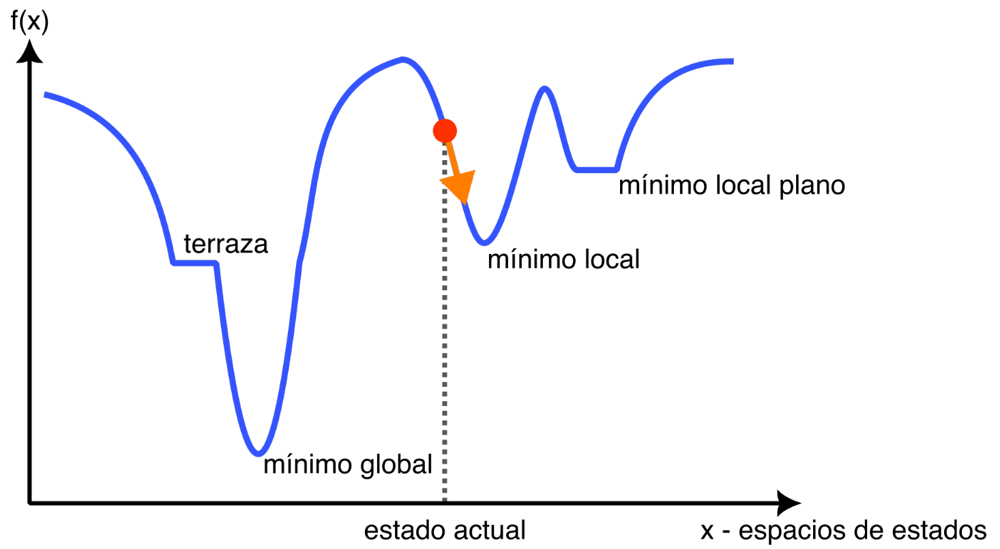
Sobreajuste vs subajuste
- 🔴 Overfitting (Sobreajuste):
- El modelo es demasiado complejo y memoriza ruido.
- Excelente en entrenamiento, pésimo en generalización.
- 🔴 Underfitting (Subajuste):
- El modelo es demasiado simple para captar patrones.
- Falla incluso en los datos de entrenamiento.
- 🎯 Good fit: equilibrio ideal para generalizar.
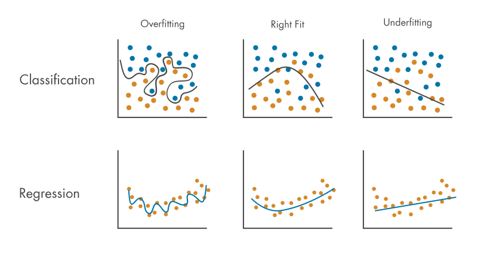
Fuente: MathWorks - Overfitting
Sesgo vs varianza
- 📌 Sesgo (Bias):
Suposiciones demasiado simples (ej. asumir linealidad). Resulta típicamente en underfitting.
- 📌 Varianza (Variance):
Sensibilidad excesiva al set de entrenamiento. Resulta típicamente en overfitting.
💡 El trade-off sesgo-varianza
Ajustar la complejidad (mediante regularización, más
datos o validación cruzada) para lograr un balance óptimo.
Hiperparámetros
Variables de ajuste configurados antes del entrenamiento que
impactan rendimiento y tiempos:
- Tasa de aprendizaje (Learning rate): tamaño del paso al
actualizar parámetros.
- Épocas (Epochs): cuántas veces el algoritmo recorre
todo el conjunto de entrenamiento.
- Tamaño de lote (Batch size): cantidad de muestras analizadas en paralelo antes de realizar un
ajuste.
Arquitectura de redes
De la neurona a la red neuronal
- Neuronas y activaciones
- Capas: densas, convolucionales, recurrentes
- Capas de soporte: pooling, dropout, batchnorm
- Perceptrón multicapa
- Estrucutra típica para redes de visión artificial
- Topologias avanzadas: multiples caminos y conexiones residuales
- Ejemplos de redes neuronales para visión artificial
Neuronas
El perceptrón es la unidad fundamental de las redes neuronales.
- Recibe múltiples entradas ponderadas por
pesos.
- Suma todas las contribuciones y agrega un sesgo (bias).
- Pasa el resultado por una función de activación no lineal.
Funciones de activación
Son funciones no lineales que se aplican a la salida de la neurona.
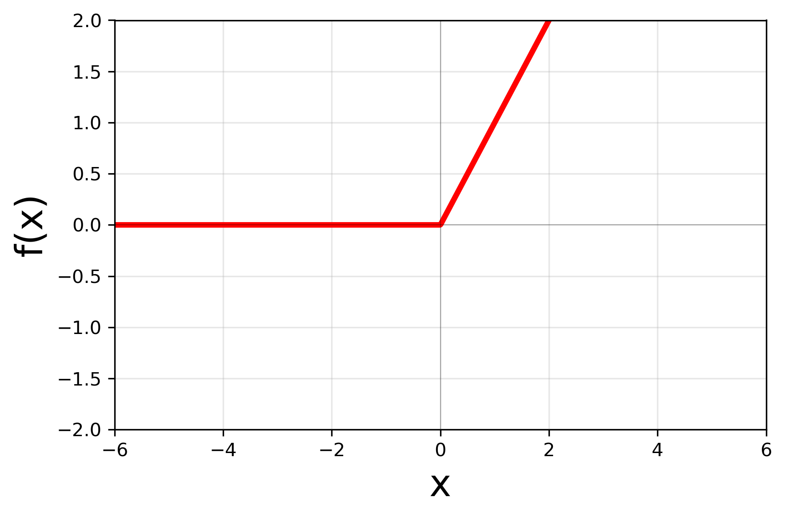
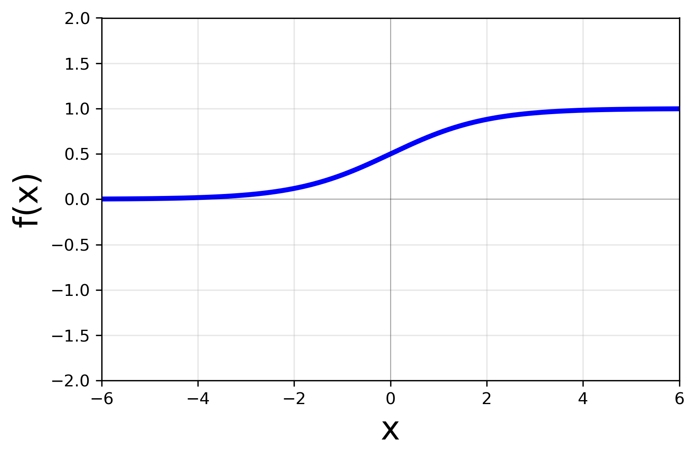
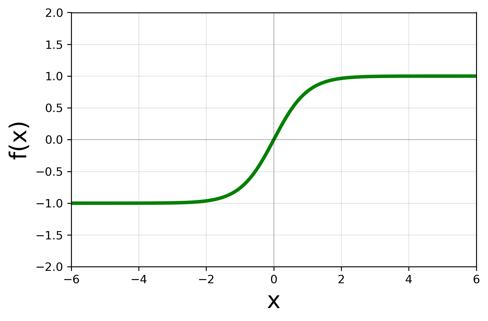
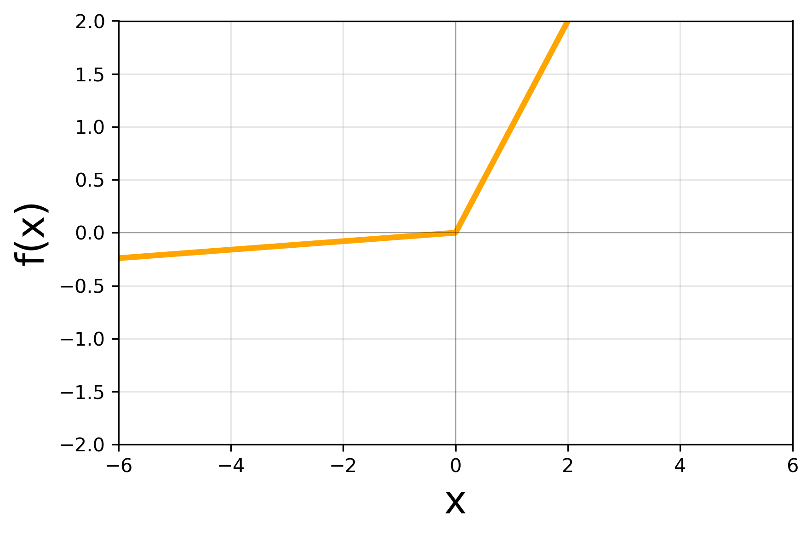
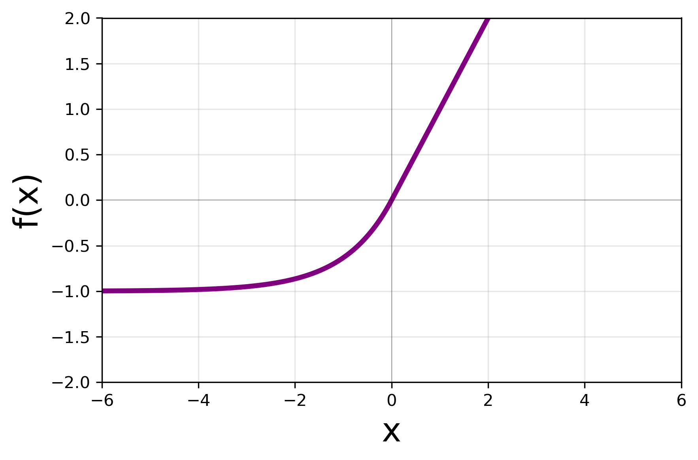
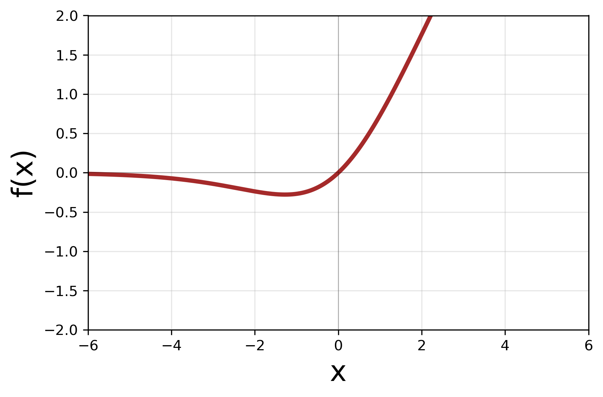
Capas Densas
También conocidas como Fully Connected (FC).
- Cada neurona está conectada a todas las neuronas de la
capa anterior.
- Gran cantidad de parámetros: propensa al overfitting y costosa computacionalmente.
Capas Convolucionales (CNN)
Especialmente diseñadas para datos con estructura espacial (imágenes).
- La idea es aplicar filtros (kernels) que se deslizan
sobre
la entrada.
- Extraen características locales de bajo y alto nivel estructural.
- Compartición de pesos: reduce drásticamente los parámetros frente a las capas densas.
Capas Convolucionales (CNN)
Capas Recurrentes (RNN, GRU, LSTM)
Ideales para datos con estructura secuencial o
temporal (texto, series temporales).
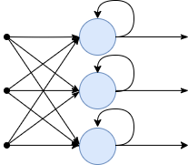
RNN: tienen memoria (estado
interno). Sufren desvanecimiento de gradiente con secuencias largas.
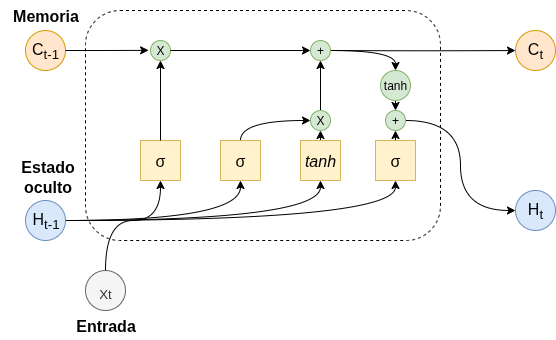
LSTM (Long Short-Term Memory):
resuelven lo anterior con compuertas para retener memoria a largo plazo.
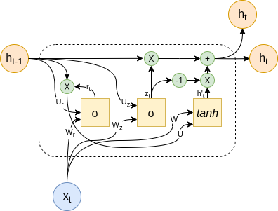
GRU (Gated Recurrent Unit): versión
simplificada de LSTM con rendimiento similar y menos cómputo.
Capas de Soporte
Ayudan a regularizar, reducir tamaño y estabilizar la red neuronal.
Pooling (Max/Average)
Reduce dimensiones espaciales conservando lo más relevante.
Flatten
Transforma tensores multidimensionales en vectores 1D.
Capas de Soporte
Ayudan a regularizar, reducir tamaño y estabilizar la red neuronal.
Batch Normalization
Centra y escala las activaciones. Acelera y estabiliza
el entrenamiento.
Dropout
Apaga neuronas aleatoriamente para forzar
independencia y evitar overfitting.
Estas capas tienen comportamiento diferente en entrenamiento y en inferencia.
Perceptrón Multicapa (MLP)
Una arquitectura clásica y fundamental.
- Múltiples capas de neuronas densas formadas por la capa de entrada,
capas ocultas y capa de salida.
- La información fluye en una sola dirección (Feedforward).
- Teóricamente capaz de aproximar cualquier función continua matemática compleja.
Estructura típica para redes de visión artificial
Dividida típicamente en dos grandes bloques:
Extracción de características (Backbone):
- Capas convolucionales para detectar patrones (bordes, texturas, formas).
- Capas de pooling para reducir dimensiones espaciales.
- Suele incluir Batch Normalization para estabilidad durante el entrenamiento.
Estructura típica para redes de visión artificial
Dividida típicamente en dos grandes bloques:
Cabeza de la red (Head):
- Capas densas (Fully Connected) para interpretar los patrones extraídos.
- Puede contener Batch Normalization y Dropout para
regularización.
- Activación Final:
- Lineal: para problemas de regresión (valores continuos).
- Softmax (o Sigmoide): para clasificación (probabilidades por categoría).
Topologías avanzadas
Conexiones Residuales (Skip Connections):
- Permiten que la información "salte" capas sin ser modificada.
- Evitan el problema de desvanecimiento del gradiente en redes ultra-profundas.
Redes con Múltiples Caminos (Ramificaciones):
- Procesan la información en paralelo usando filtros de distintos tamaños sobre la misma entrada.
- Combinan/concatenan los resultados al final del bloque.
Ejemplos de redes
Breve recorrido histórico de arquitecturas exitosas y su influencia en visión
artificial.
LeNet-5 (1998)
Pionera en el uso práctico de redes convolucionales.
- Diseñada por Yann LeCun para reconocimiento manuscrito de códigos
postales
y cheques.
- Marcó el estándar inicial de estructura: Conv → Pool →
Conv
→ Pool → FC.
AlexNet (2012)
El despegue que impulsó la revolución del Deep Learning.
- Ganó el concurso ImageNet destruyendo los métodos tradicionales.
- Popularizó la función de activación ReLU y el uso de
Dropout libremente.
- Aprovechó de lleno el poder paralelo de las GPUs modernas.
VGG (2014)
Más profundidad con un canon de simplicidad estructural absoluta.
- Demostró empíricamente que apilar muchos filtros pequeños (3x3) era
mejor
que usar filtros grandes.
- Modelos masivos (VGG-16, VGG-19) referenciando capas que tenían.
- Muy pesadas y computacionalmente costosas (más de 138 millones de parámetros).
Inception / GoogLeNet (2014)
Uso temprano de múltiples caminos.
- Superó a VGG siendo mucho más liviana.
- Cada módulo Inception aplica filtros 1x1, 3x3 y 5x5 en
paralelo.
- Uso de convoluciones "cuello de botella" (1x1) para reducir costo computacional.
ResNet (2015)
El santo grial moderno: las verdaderas redes hiperprofundas.
- Introdujo los bloques residuales (skip connections)
estructurales.
- Demostró algo crucial: permitir entrenar cientos de capas sin el
problema
de desaparición del gradiente.
- Cimentó el pilar arquitectónico de casi cualquier diseño moderno.
MobileNet (2017)
Eficiencia y miniaturización total para Embedded AI e IoT.
- Reemplazó las convoluciones estándar por convoluciones separables en
profundidad (Depthwise Separable).
- Cae la complejidad multiplicativa abismalmente.
- Hizo viable correr modelos de visión en tiempo real sobre hardware móvil en los bordes.
Resumen de Redes de Visión
| Red |
Año |
Parámetros |
Precisión (ImageNet Top-5) |
Uso / Innovación Destacada |
| LeNet-5 |
1998 |
~ 60 K |
N/A (Cifras de MNIST) |
Reconocimiento de dígitos y OCR básico. |
| AlexNet |
2012 |
~ 60 M |
~ 84.7% |
Pionera en popularizar Deep Learning con GPUs y ReLU. |
| VGG-16 |
2014 |
~ 138 M |
~ 92.7% |
Canon de simplicidad, pero muy costosa computacionalmente. |
| Inception-V1 (GoogLeNet) |
2014 |
~ 7 M |
~ 93.3% |
Extremadamente eficiente. Introdujo múltiples caminos. |
| ResNet-50 |
2015 |
~ 25 M |
~ 94.7% |
Estándar moderno en la industria gracia a conexiones residuales. |
| MobileNet-V1 |
2017 |
~ 4.2 M |
~ 89.5% |
Prioriza la eficiencia para dispositivos móviles (IoT, Edge AI). |
Ejemplos intuitivos
Dos ejemplos concretos para desarrollar intuición sobre cómo
aprenden los modelos:
-
①
Ajuste de función 1D: modelos de complejidad creciente aprenden
y = ax + b + c·sin(dx + e) - desde regresión lineal hasta redes neuronales.
-
②
Visualización interactiva de una LeNet: veremos cómo fluyen los datos
a través de una red convolucional, capa por capa, en tiempo real.
Ejemplo 1 - El problema
Modelos probados, de menor a mayor complejidad:
- Regresión lineal
ax + b
- Lineal + senoide
ax + b + c·sin(dx+e)
- Neurona sola con ReLU
- Capa densa (sin hidden)
- MLP - 1 capa, 8 neuronas
- MLP - 1 capa, 128 neuronas
- MLP - 2 capas, 8×8 neuronas
- MLP - 2 capas, 64×64 neuronas
Ejemplo 1 - Ajustes
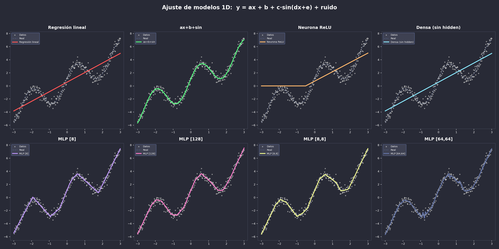
Ejemplo 2 - Visualización 2D de una LeNet
Resumen: introducción para CESE
- El ciclo de vida de un proyecto de IA es iterativo e incluye
desde la definición de datos hasta el despliegue del modelo.
- Los modelos matemáticos aprenden de los datos mediante el
entrenamiento (ajustando parámetros), para luego realizar la inferencia de manera rápida y eficiente.
- Las arquitecturas de redes neuronales se componen de distintas
capas (densas, convolucionales, recurrentes, pooling, etc.) y topologías según la tarea a resolver.
- La intuición práctica es vital: ver cómo ajusta una regresión
1D y cómo activan los mapas visuales en una CNN nos ayuda a entender "qué ve" y cómo procesa la red.
A continuación: introducción para CEIA →
{kind=link}